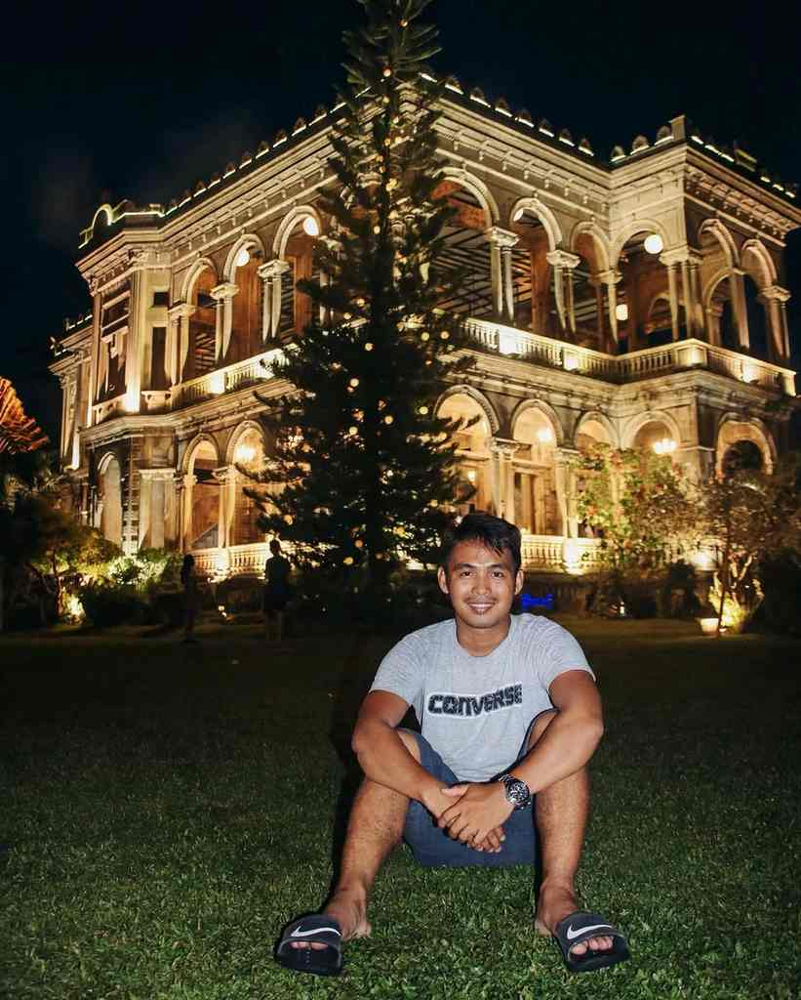

Bacolod rewards a first visit without asking much of you. The city is flat, the downtown sights sit a short walk apart, and most of what people come for lines up along Lacson Street, the long avenue that runs through the middle of town. Talisay and Silay, home to the province's two best-known heritage stops, are next door rather than a day's drive away.
That makes planning easy. This list puts the 15 things worth your time in a sensible order, from the burned mansion that became Negros Occidental's postcard to the grill smoke of Manokan Country, the sugar-era houses of Silay and a few quieter stops most short trips skip. A two-day plan and a few practical notes close it out.
Two full days cover the essentials. A third lets you add the mountains or simply slow down, which suits a city that calls itself the City of Smiles and tends to eat its way through the afternoon.

Bacolod at a glance
- Province: Negros Occidental, on the western side of Negros Island
- Airport: Bacolod-Silay Airport, in Silay City, roughly 30 to 45 minutes from downtown by car
- Time needed: two days for the highlights, three with a mountain day
- Busiest month: October, when MassKara fills hotels
1. See The Ruins after the lights come on
Start with the one place everyone asks about. The Ruins stands in Talisay City, about 20 to 30 minutes from central Bacolod, on what used to be a sugar estate. Don Mariano Ledesma Lacson built the Italianate mansion in the early 1900s in memory of his wife, Maria Braga, who died in childbirth. During the Second World War, guerrillas set it on fire so Japanese forces could not use it as a headquarters. The fire took the wooden interiors, but the concrete shell survived, and that skeleton is what you see today.
Arrive in the late afternoon, walk the grounds in daylight, then stay until the facade is lit. The building looks like a different place after dark. Adult entry is around ₱150, with lower rates for students, seniors and persons with disability. The estate also hosts weddings and events, so confirm the hours before you head out. For timing tips and how to pair it with Silay, see this day plan for The Ruins and Silay's heritage houses.
2. Eat chicken inasal at Manokan Country
Manokan Country is a row of grill stalls near SM City Bacolod, and it is where the city's signature dish feels most at home. The chicken is marinated in vinegar, calamansi and garlic, brushed with annatto oil and grilled over charcoal until the skin chars at the edges. It arrives with rice, a spoonful of chicken oil to pour over it, and a dip you mix yourself from soy sauce, vinegar, calamansi and chili.
Order paa (leg) or pecho (breast), and add isol, the grilled tail, if you are curious. Every stall has loyal regulars, so pick one with a busy grill and a steady turnover of tables. Wear something you do not mind smelling of smoke. If you want to keep eating, this Bacolod food trail covers more local stops.
3. Walk around the Capitol Lagoon
The provincial capitol, a grand neoclassical building, faces a long rectangular lagoon on the Lacson Street side of the city. Two carabao sculptures stand at the water's edge, one with a woman and one with a man, and both have been photographed by generations of visitors. Joggers take over in the early morning, families in the late afternoon.
It costs nothing and takes about 20 minutes to circle at an easy pace. The light is kindest after four, when the heat drops and the facade turns warm.
4. Get the background at the Negros Museum
The Negros Museum, inside the Capitol complex near the lagoon, tells the island's story through the sugar industry that shaped it: hacienda life, the families who grew rich on it, and the workers who did the harvesting. It is a smaller museum, and that works in its favour. An hour is enough, and you leave understanding why The Ruins and the Silay mansions exist at all.
Go before your heritage day rather than after. Check the opening days before you go, since many Philippine museums close on Mondays and holidays.
5. Step into San Sebastian Cathedral
Bacolod's cathedral sits downtown, facing the public plaza. Its walls are coral stone, finished in 1882, and its twin bell towers are the easiest landmark in the old centre. Inside, the space is plain and airy rather than ornate. Masses are held through the day, so keep your voice low and dress modestly.
6. Sit for a while in the public plaza
Across from the cathedral, Bacolod Public Plaza is small, shaded and full of local life. The gazebo at the centre once hosted the city band, and the benches around it are good for people-watching. Early mornings bring exercise groups; late afternoons bring students and snack vendors. It is the natural place to get your bearings before walking the rest of downtown.
7. Learn why MassKara began
MassKara is Bacolod's best-known festival, held through October around the city's charter anniversary. Its story is more serious than the smiling masks suggest. In 1980, sugar prices crashed and the province's economy went with them. In April that year, the passenger ship MV Don Juan sank after colliding with a tanker in Tablas Strait, and many passengers were from Negros. The city answered a hard year with a festival of smiles. Artist Ely Santiago is credited with the name, which joins "mass" (many) and "kara" (face).
If you visit in October, book your room weeks ahead. Outside festival season, you can still find masks for sale in souvenir shops around the city.
8. Fill a bag with piaya and napoleones
Piaya is the pasalubong most people carry home: a thin, flaky flatbread filled with muscovado and pressed on a griddle. You will find it plain, with ube or with mango, sold by several bakeries in Bacolod and Silay. Napoleones, layers of puff pastry with custard and a sugar glaze, are the other must-try, though they are best eaten within a day. Buy piaya on your last afternoon so it is still fresh when you get home.
9. Have cake at Calea
Calea is the cake shop locals send every visitor to. The display case is long, the slices are generous. Chocolate cakes and cheesecakes are the usual picks. Afternoons get crowded, so go after lunch or late in the evening, and share a slice or two if you are also planning dinner.
10. Spend half a day in Silay's heritage streets
Silay sits just north of Bacolod and has kept about 30 ancestral houses from the sugar boom, which earned it a place among the country's national historical landmarks. Most are still private homes, so you admire them from the street. A few open as museums, and Balay Negrense is the one to prioritise. Victor Fernandez Gaston, son of the French-born sugar pioneer Yves Gaston, built the house in the late 1800s, and it opened as a museum in 1990. Stone below, wood above, high ceilings and wide windows: it shows how a planter family lived better than any textbook.
The Hofileña and Jalandoni houses are short walks away. Morning is the best time, before the heat builds and while the streets are quiet.
11. See the Pope John Paul II Tower
Out on the reclaimed land west of downtown, the Pope John Paul II Tower was built to mark his 1981 visit to Bacolod. It is a quiet stop, more meaningful to pilgrims than to sightseers, but the open ground around it catches the breeze and the evening sky over the Guimaras Strait. Pair it with dinner in the nearby reclamation area.
12. Cool off in Mambukal
When the city heat wears you down, head for the hills of Murcia. Mambukal Mountain Resort, about an hour from downtown, has a chain of waterfalls, warm sulphur pools, forest trails and a cooler climate than the coast. It makes an easy full day, and an even better one if you start early. Here is a guide to the Mambukal day trip with what to expect.
13. Visit the Central Market early
Bacolod's Central Market shows the city before the malls open. Fish, vegetables, dried goods and native snacks such as puto and kakanin change hands from dawn. Go before eight, wear shoes that can handle wet floors, and bring small bills. It is a working market, not a tourist attraction, so give the stalls room and ask before taking photos of people.
14. Take the kids to Campuestohan
Campuestohan Highland Resort sits up in the Talisay highlands, with themed attractions, rides, pools and wide mountain views. It is built for families, and children tend to love it. Travelling without kids? Skip it and give Silay or Mambukal the extra hours instead.
15. Eat your way down Lacson Street at night
End where the city does. Lacson Street turns into Bacolod's dining room after dark, with grill houses, cafés, bakeries and late-night dessert spots strung along both sides. Traffic slows in the evening, so for short hops walking is often quicker than a taxi. Stay somewhere near the street and you can have dinner, cake and coffee without ever getting in a car.
A plan for two or three days
- Day 1Downtown Bacolod
Public plaza and the cathedral in the morning, then the Negros Museum and the Capitol Lagoon. Chicken inasal at Manokan Country, cake at Calea, and an evening on Lacson Street.
- Day 2Silay and Talisay
Silay's heritage houses in the morning, a long lunch, then The Ruins from late afternoon until the lights come on.
- Day 3Optional
Mambukal for waterfalls and cool air, or Campuestohan with kids. Buy piaya on the way back.
Before you go
Good to know
- The airport is in SilayPlan on 30 to 45 minutes by car to downtown Bacolod, longer at rush hour.
- Stay centralA base near Lacson Street keeps the food strip, the lagoon and the malls within walking distance.
- Use taxis and ride apps for the side tripsJeepneys work in the city, but a hired car or app ride makes The Ruins and Silay easier, especially for the trip back after dark.
- Plan around the heatKeep walking for mornings and late afternoons, and save museums and cafés for midday.
Bacolod is not a city to rush through. See a few sights, eat well, rest when it gets hot, and leave room for one more slice of cake. Most first visits end with people planning a second one.

Comments
No comments yet. Been here recently? Share a tip or ask a question.
Leave a Reply